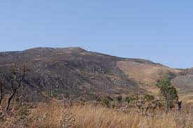

MONT TENAKOUROU

- Situation Géographique
Le Tenakourou est le point culminant du Burkina Faso, à 747 mètres d'altitude. Il se situe près de la frontière avec le Mali. Comme son altitude était proche de celle d'un sommet voisin au Mali, un amas de pierres a été monté pour faire une plus grande différence.
- Histoire
Le village de Tena était en effervescence le samedi 17 août 2013. Au son des balafons et des tam-tams, il a accueilli des invités venus de Banfora, Bobo-Dioulasso et Ouagadougou, pour découvrir et visiter sa colline, la plus haute du pays : le mont Ténakourou.
Le mont Ténakourou signifiant en langue nationale dioula «la colline de Tena», avec ses 747 m d’altitude, symbolise le «triangle» (expression du guide touristique) de trois pays que sont le Mali, la Côte d’Ivoire et le Burkina Faso. Il comporte une construction en pierre érigée par un Français en 1974 afin de porter la hauteur à 750 m. De 2003 à 2005, l’Office national du tourisme burkinabè (ONTB) organisait une grande ascension sur le mont Ténakourou, ce qui l’a rendu célèbre et l’a fait connaître au-delà des frontières du Burkina Faso. Cependant, il surplombe un village inconnu, perdu dans la brousse qui s’est pour l’occasion, révélé aux randonneurs : Tena. Tena qui signifie en langue sénoufo «Assieds-toi ici» a été fondé, selon la tradition orale, par un chasseur samogo venu du Mali. Ce dernier était à la recherche de sa femme qu’un autre chasseur avait enlevée. Arrivé sur le site, une voix se serait adressé à lui en disant : «Reste ici. Elle viendra te trouver et le bonheur également viendra te trouver ici». Le chasseur s’y est donc installé et un beau matin, sa femme est effectivement revenue. Aujourd’hui, le village mène comme activité principale l’agriculture, mais ne dispose pas encore de marché. Ses habitants se déplacent pour aller à Ouéléni situé à 5 km pour faire les achats, ou bien se rendent à Kankalaba situé un peu plus loin.
Aujourd’hui encore dans ce village, à l’approche de l’hivernage qui coïncide avec la fin de l’année, les parents préfèrent envoyer leurs enfants au champ plutôt qu’à l’école. Drissa Ouattara lui, est allé au collège à Kankeledaga, mais s’est limité à la classe de 3è en 2011. Il s’explique : «J’ai arrêté les cours parce que je ne voyais pas la possibilité d’obtenir un emploi après ».
Ayant alors abandonné les bancs, il est parti à Dabou en Côte d’Ivoire pour «lancer machette », c’est-à-dire nettoyer les plantations en les débarrassant des mauvaises herbes à l’aide d’une machette. Ce qui lui a permis d’acheter une moto et de revenir au village. Avec cette moto, Drissa Ouattara peut se rendre à Kankalaba ou à Ouéléni parce qu’aucun camion de transport n’arrive dans le village. Pour la présente randonnée, il a fallu gratter à la machine la voie, pour permettre aux véhicules d’accéder au village. Malgré cela, avec la pluie notamment, les camions se sont embourbés à l’entrée de Kankalaba, obligeant les randonneurs à une longue marche dans la boue, en plus de la montée du Ténakourou. Une montée assez rude ! Au sommet, à défaut de toucher les nuages, les randonneurs avaient une vue magnifique du paysage et se retrouvaient à 3 km du Mali et 13 km de la Côte d’Ivoire. Justement, les peuples sénoufo des deux pays et ceux du Burkina Faso se rencontrent régulièrement autour du Festival des arts, des rites et de la musique du Paysan noir, dont la troisième édition aura lieu du 10 au 13 octobre 2013 à Tena.
Wuroteda Ibrahima SANOU